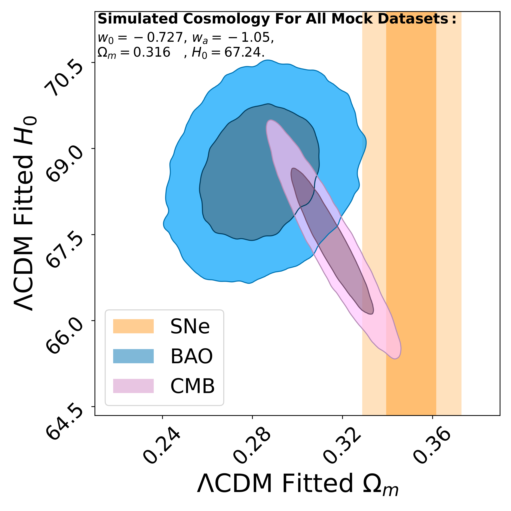

Uniting the Observed Dynamical Dark Energy Preference with the Discrepancies in Ω m and H 0 across Cosmological Probes
- Paper in preparation
- Paper in preparation
In regions of strong lensing, while the main contribution is primarily from a single massive deflecting body, the effects of line-of-sight directions known as external convergence and external shear could significantly influence observable quantities and need to be well modeled. This project focuses on the simulation and analysis of the effects of line-of-sight (LOS) structures on strong gravitational lensing, particularly external convergence and shear. It involves creating large-scale structure simulations and sub-structure ray-tracing halos-rendering within a light cone, which are then used to render high-resolution weak lensing maps for convergence and shear (κ & γ).
- Paper in preparation

In anticipation of the immense data expected from LSST, which includes substantial examples of galaxy-galaxy lenses. Dataset from simulation pipeline before the advent of large-scale surveys like LSST can help get a better assessment and correction with the systematic errors for both statistical and individual lens modeling and cosmology analysis.
This project for the pipeline focused on the galaxy scale strong lensing effects and the development of a full-sky simulation of a strong gravitational lenses population, implementing simulations of galaxy-galaxy strong lensing using Schechter luminosity function from Skypy and strong lensing modules from Lenstronomy achieved population analysis and image generation.
- Paper in preparation